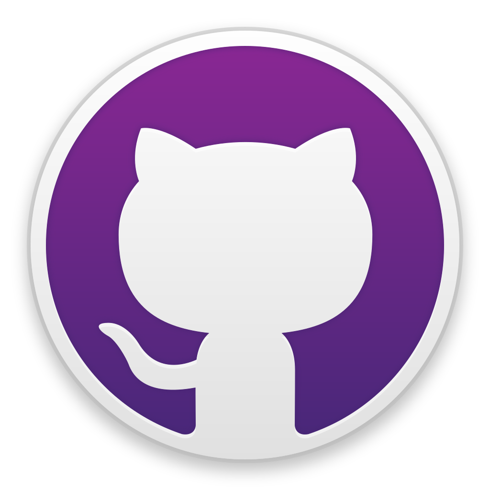
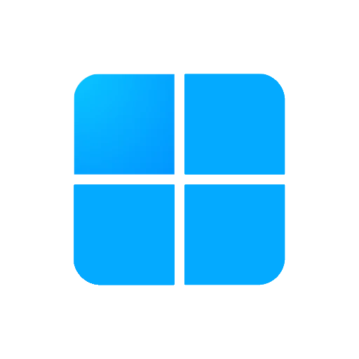

Análisis de Riesgos
| Riesgo Potencial | Causa Probable | Probabilidad | Acción Preventiva | Acción Correctiva | Medios de Aviso |
|---|---|---|---|---|---|
| Errores técnicos en la app | Código mal probado o falta de experiencia | Media | Realizar pruebas frecuentes (unitarias y de usuario) | Corregir errores de manera iterativa y documentarlos | Integrar herramientas como Logcat y crash reports |
| Incompatibilidad de sistemas | Ordenadores del centro con configuraciones diferentes | Media | Configurar los entornos correctamente al inicio | Reinstalar configuraciones faltantes | Monitorear las instalaciones con listas de verificación |
| Falta de comunicación con los alumnos de la universidad | Retrasos en respuestas o información incompleta | Alta | Establecer reuniones regulares y fijar plazos claros | Buscar fuentes alternativas de información o aclaraciones rápidas | Confirmar las entregas con mensajes o videollamadas |
| Retrasos en la entrega del proyecto | Falta de coordinación dentro del grupo | Alta | Asignar tareas claras y definir fechas límite en un cronograma | Reorganizar tareas o priorizar entregables urgentes | Usar un sistema de gestión como Trello o Google Docs |
| Falta de recursos compartidos | Desincronización del código o pérdida de archivos | Media | Usar un repositorio en GitHub para control de versiones | Restaurar archivos desde el historial de Git | Alertas de cambios y sincronización en GitHub |
| Problemas de diseño de los juegos | Requisitos mal definidos o inconsistentes | Media | Revisar en detalle la documentación antes de comenzar | Ajustar el diseño con retroalimentación rápida | Contacto directo con los responsables |
| Interrupciones en el acceso a los equipos del centro | Fallas técnicas o restricciones de uso | Baja | Planificar el trabajo fuera del horario crítico | Usar equipos personales o aulas alternativas | Comunicación con los profesores y soporte técnico |
Recursos Materiales
- Portátil Hacer Aspire 3 x4
- Ratón NGS Flame óptico con cable x4
- Switch TP-Link TL-SG108E Unmanaged PRO x1
- Cable de Red Ethernet con Conectores RJ45 x4
- Mesa de madera para trabajo x2
- Sillas para trabajo x4
Procesadores de Texto
- Google Docs Editors:
- Documentos
- Hojas de cálculo
- Presentaciones
- Android Studio text editor
- Visual Studio text editor
- Windows Notepad
Herramientas de Desarrollo

Visual Studio Code

Kotlin

Android Studio

Jetpack Compose

GitKraken

GitHub Desktop

GitHub


Google APIs

Trello
Asistentes IA

Windows 11